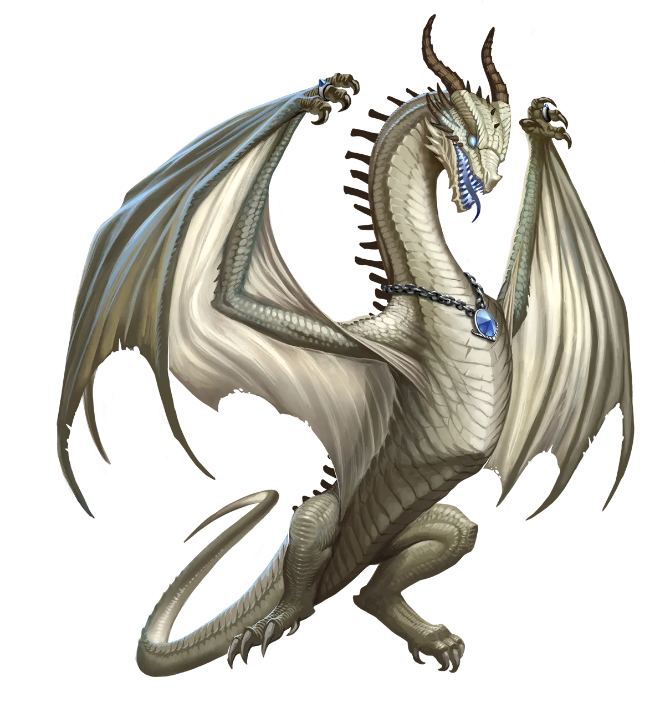
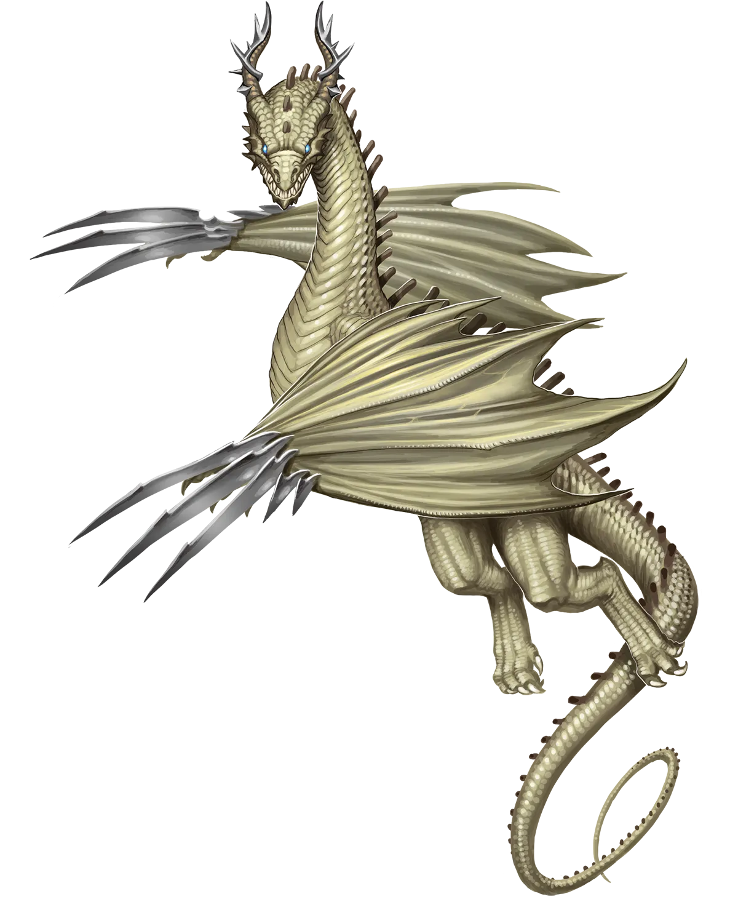

墓穴龙轶事
墓穴龙为了执行任务而行遍四方，因此它们往往会附带积累许多有趣的故事，而非刻意追求。至于急需迅速获得力量的永恒墓穴龙，它们积累冒险轶事的速度远快于其他墓穴龙。对于想听故事的人来说，墓穴龙是一个极好的潜在来源，只要它们更愿意真正讲述自己的故事。它们不一定像朱红龙那样享受这个过程，所以可能需要经过一些协商，但结果值得一试。我建议为墓穴龙的宝库提供物品。它们往往喜欢精美的殡葬用品。
墓穴龙 Crypt Dragon |
|
|
墓穴龙在炼狱之外的诸位面巡逻，寻找涉及死者及其灵魂的不法勾当的迹象。但有时，它们会遇到一些以当前年龄和威力水平无法解决的事情。在这些情况下，永恒之光仪式提供了迅速成长、超越死灵或灵性不法行为并加以制止的机会。因此，墓穴龙比其他位面龙更有可能出于与非位面龙类似的原因而执行该仪式。墓穴龙在巡逻和调查时通常是独行的。这种独立性和缺乏基础设施，是它们需要借助永恒之光仪式来准备并克服重大威胁的主要促成因素。另一方面，这也意味着墓穴龙彼此信任，能够独立行动，自行斟酌以他们认为最佳的方式处理可能遇到的任何问题。因此，传统派墓穴龙很少浪费时间质疑永恒墓穴龙执行仪式的决定。木已成舟，一切终将过去，即使是龙类也终有末日。这使得两种墓穴龙之间的关系相对融洽。尽管它们彼此保持距离，但即使在永恒之光仪式出现之前，这也是意料之中的事。 永恒墓穴龙通常有一项重要任务激励它们执行永恒之光仪式，基于它们的本性，这通常是威胁到大量死者或其灵魂的事情。这类威胁往往涉及亡灵法师、萨基尔或亡灵，但并非总是如此。还有其他各种灾难和祸患可能引起永恒墓穴龙的兴趣。刚执行完仪式后，永恒墓穴龙知道自己还未准备好应对更大的威胁，因此它们常常尝试跳出传统生活方式中的舒适区：结交一些朋友和盟友，共同努力增强实力。如果墓穴龙选择的威胁在边缘地带提供一些较弱的对手，用来磨砺团队的技能，那就更好了；但如果没有，墓穴龙也不介意先帮助盟友解决他们的小问题，等大家都准备好了，再继续处理更重要的事情。永恒墓穴龙倾向于选择与生命和死亡相关的职业，以及那些擅长保护灵魂和消灭亡灵的职业技能。这通常包括牧师或圣武士等职业。术士或魔契师也是特别合适的选择。 墓穴龙轶事 墓穴龙为了执行任务而行遍四方，因此它们往往会附带积累许多有趣的故事，而非刻意追求。至于急需迅速获得力量的永恒墓穴龙，它们积累冒险轶事的速度远快于其他墓穴龙。对于想听故事的人来说，墓穴龙是一个极好的潜在来源，只要它们更愿意真正讲述自己的故事。它们不一定像朱红龙那样享受这个过程，所以可能需要经过一些协商，但结果值得一试。我建议为墓穴龙的宝库提供物品。它们往往喜欢精美的殡葬用品。 墓穴龙特质 Crypt Dragon Traits 你出身于一脉看守亡魂的墓穴龙世系。 |
  |